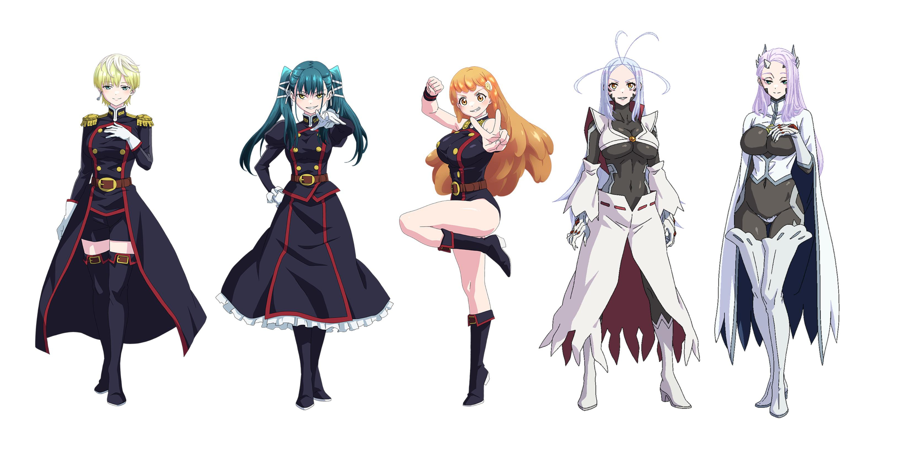
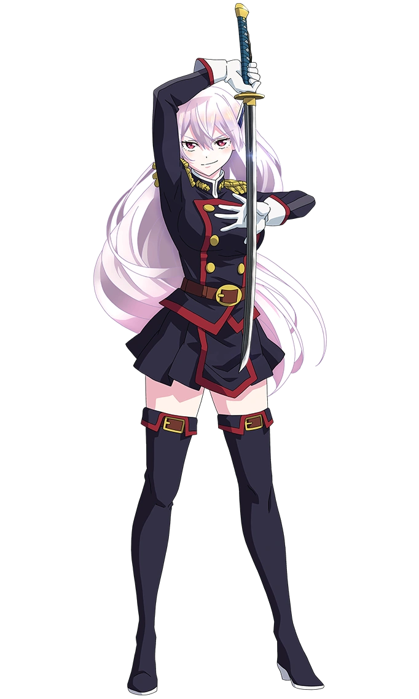

Yen Press changes 'Mato Seihei no Slave' localized title to 'Chained Soldier'
Chained Soldier, written by Takahiro and illustrated by Yohei Takemura, began on Shueisha's Shōnen Jump+ online platform on January 5, 2019. Shueisha has collected its chapters into individual tankōbon volumes. The first volume was released on March 4, 2019. As of February 2, 2024, 15 volumes have been released.
NEWS!!!
Season 2 Announced!!!
Mato Seihei no Slave will have a Season 2! There are still no dates on when will it released.
Season 2 Announced!!!
Mato Seihei no Slave will have a Season 2! There are still no dates on when will it released.
Season 2 Announced!!!
Mato Seihei no Slave will have a Season 2! There are still no dates on when will it released.
